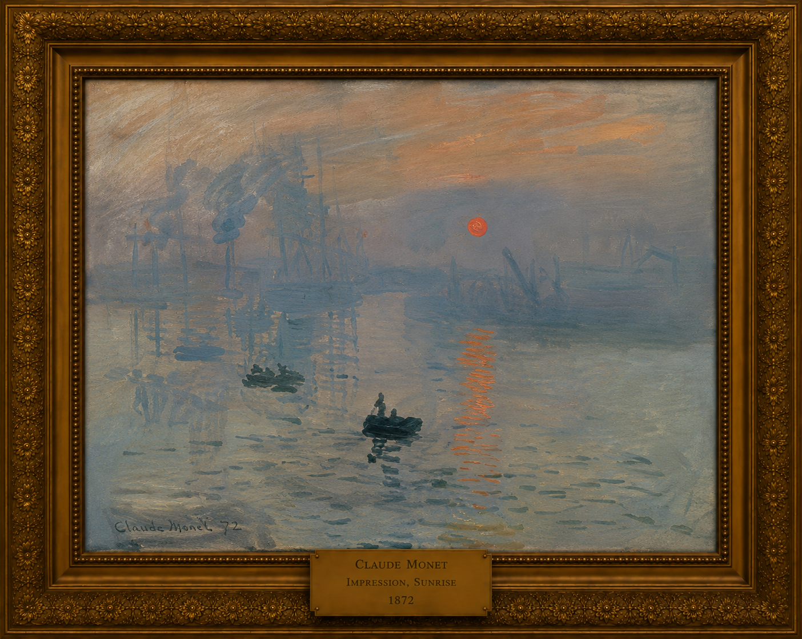

Œuvre 024 · Impressionnisme

Notice de catalogue
Impression, soleil levant
Claude Monet
Le tableau qui donna son nom à un mouvement
Une aube fugitive sur Le Havre devient un manifeste du regard moderne : la lumière, l’atmosphère et la perception immédiate remplacent le fini académique.
Contexte historique
Monet peint l’avant-port du Havre depuis l’hôtel de l’Amirauté vers novembre 1872. Présenté en 1874, le titre du tableau inspire au critique Louis Leroy le terme « impressionnistes ».
Composition
Trois barques sombres conduisent le regard dans le port. Le soleil légèrement décentré et son reflet vertical interrompu forment l’axe principal, équilibré par les touches horizontales de l’eau. Mâts, grues, cheminées et quais se dissolvent derrière eux dans la brume.
Couleur et lumière
La vapeur bleu-gris domine le port. Face à elle, l’orange complémentaire du soleil paraît particulièrement intense et communique la lumière sans modelé conventionnel.
Touche et perception
Des marques minces et rapides préservent la vitesse de l’observation. De près, l’eau et les barques se décomposent en touches économes ; à distance, l’œil les assemble en une scène convaincante. La description détaillée cède la place à une expérience du regard.
Profondeur atmosphérique
Les barques du premier plan demeurent relativement solides, tandis que mâts, grues, cheminées et bâtiments perdent leurs contours en s’éloignant. La lumière et la vapeur construisent la distance plus fortement qu’une perspective géométrique conventionnelle.
Modernité
Le paysage associe nature, industrie, transport et travail matinal. Le tableau représente donc la vie moderne autant qu’un effet atmosphérique.
Format et portée
Avec environ 48 × 63 cm, la toile est modeste plutôt que monumentale. Sa force tient à l’économie de ses moyens : quelques barques, des silhouettes industrielles, de la brume, de l’eau et un soleil orange suffisent à évoquer tout un milieu et une nouvelle conception de la peinture.
Une nouvelle définition du fini
Ce que les critiques hostiles jugeaient inachevé traduit un changement volontaire de priorité. Monet achève l’expérience visuelle plutôt que chaque objet : la toile restitue la manière dont un lieu atteint le regard sous une lumière précise.
Voir de près
Approchez-vous pour isoler les marques de Monet, puis reculez afin de voir le port se recomposer dans votre perception.
- 1Suivez le reflet orange vertical sur les touches horizontales de l’eau.
- 2Comparez les barques solides du premier plan au fond industriel qui se dissout.
- 3Observez de près les marques séparées bleu-gris et orange.
- 4Reculez et voyez comment l’œil reconstruit un port actif avec très peu de détails.
Chronologie
- 1872 Monet peint le port à l’aube.
- 1874 L’œuvre figure à la première exposition impressionniste.
- 1940 Elle entre au musée Marmottan par le legs Donop de Monchy.
- Aujourd’hui Elle demeure une œuvre fondatrice de l’impressionnisme.